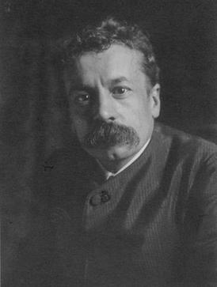

René Jules Lalique (1860 - 1945) was a French jeweler, medallist, and glass maker famous for his Art Nouveau jewelry and later glass creations of the Art Deco period.

By 1881, Lalique worked as a freelance designer for several French jewelry firms, including Cartier and Boucheron. After working as an art nouveau jeweler for over 30 years, he became noted for creating fantastic art deco glass works in the 1920s, including perfume bottles and hood ornaments.